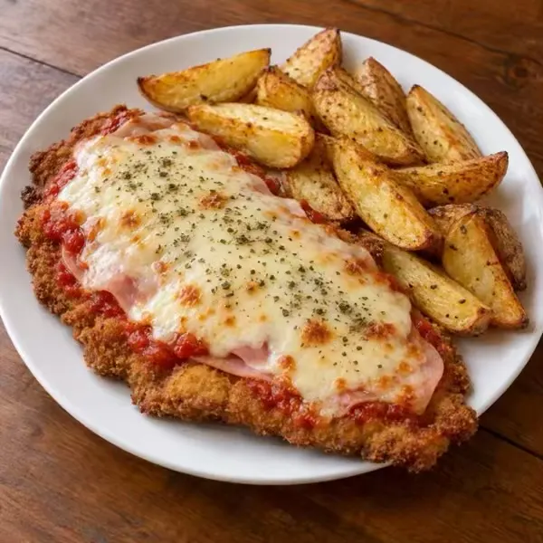
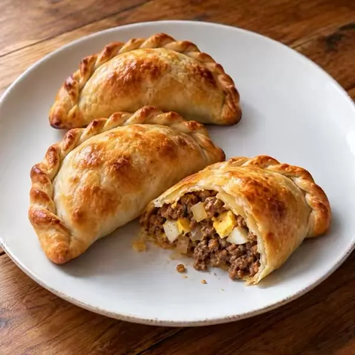
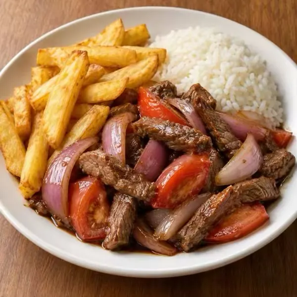
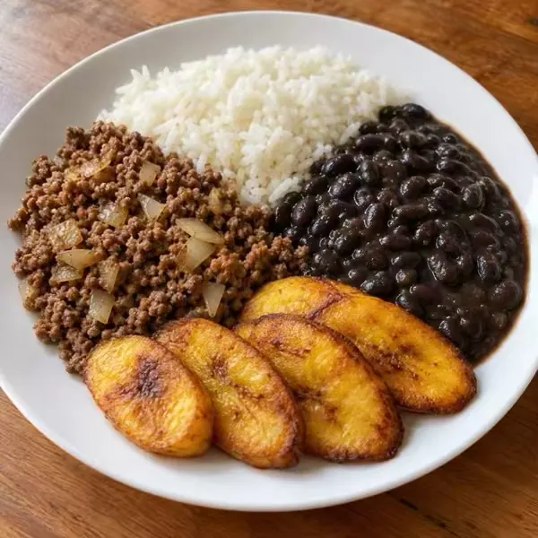
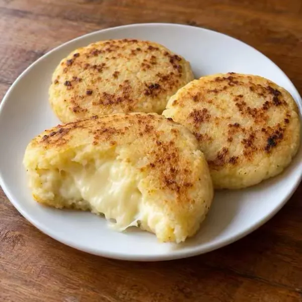
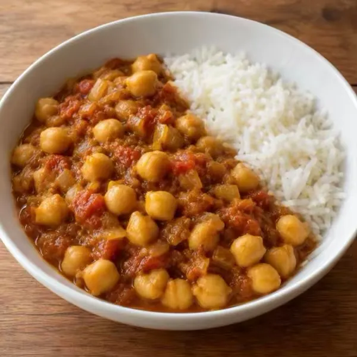
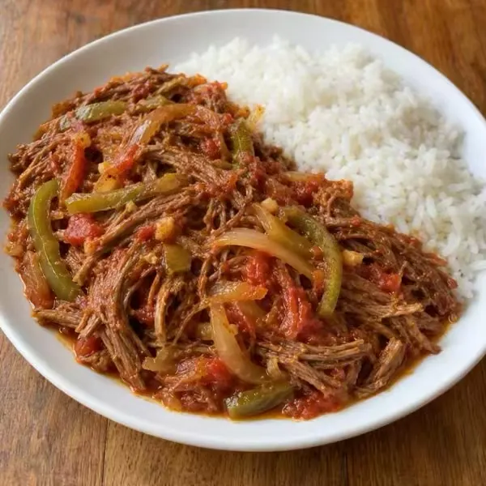

DEINE KÜCHE, BESSER ORGANISIERT
Nutze, was du hast.
Genieße, was du kochst.
Behalte Haltbarkeitsdaten im Blick, entdecke Rezepte und plane deine Mahlzeiten mit Vencito.
Kostenlos · Ohne Werbung · Ohne Konto
 Illustrative App-Ansicht
Illustrative App-AnsichtMEHR IDEEN, WENIGER VERSCHWENDUNG
Von deinen Vorräten zu deinem Essen.
Über 1.500 Alltagsgerichte mit ungefähren Nährwertangaben.
Ungefähre Werte pro Portion. Mengen, Marken und Zubereitung beeinflussen die Angaben.
EIN WENIG ORDNUNG, MEHR GELASSENHEIT
Deine Woche,
ein bisschen einfacher.
Wähle Rezepte, plane deine Mahlzeiten und ergänze fehlende Zutaten auf deiner Einkaufsliste.
Organisiere dich mit Vencito →
Wähle einen Tag, um fehlende Zutaten zu sehen.
SO FUNKTIONIERT ES
Vom Foto zur rechtzeitigen Erinnerung.
Sieh, wie du eine Verpackung scannst und ein Produkt in Vencito hinzufügst.
Funktionen ↓Der Scan im Video ist eine illustrative Simulation.
So funktioniert es
Vom Supermarktregal in deinen Kühlschrank, in drei Schritten
Foto machen
Von der Verpackung, mit sichtbarem Datum. Oder richte die Kamera live aus: Sie liest Barcode und Datum gleichzeitig. Du kannst weitere Fotos hinzufügen: Produkt, Barcode und Haltbarkeitsdatum.
Vencito ergänzt den Rest
Es liest das Datum, schlägt Name und Kategorie vor und sucht den Barcode bei Open Food Facts und dessen Datenbanken für Kosmetik und andere Produkte. Du prüfst und speicherst.
Rechtzeitig erinnert werden
Eine Benachrichtigung pro Tag, zur Uhrzeit deiner Wahl, mit dem, was bald abläuft: standardmäßig 30, 15, 7, 3 und 1 Tag vorher.
Hier ausprobieren
Gib ein, was auf der Verpackung steht
Das ist eine vereinfachte Version des Datumslesers der App. Er versteht die auf Verpackungen gedruckten Formate und bevorzugt das Haltbarkeitsdatum gegenüber dem Herstellungsdatum.
Haltbarkeitsdatum
—
—Funktionen
Gemacht für Vorratsschrank, Kühlschrank und Medikamentenschrank
Datumsleser
EXP 14/02/27, 25-08-2026, 25 AUG 2026, 08/2027, MHD 04/27… Er unterscheidet Haltbarkeits- von Herstellungsdatum und liest Verpackungen in sechs Sprachen.
Barcodes
Live-Scan oder aus dem Foto, mit EAN, UPC und QR. Open Food Facts (und dessen Datenbanken für Kosmetik und andere Produkte, etwa rezeptfreie Medikamente) füllt Name, Marke und Kategorie aus.
Was koche ich heute?
Rezepte mit dem, was du hast, beginnend mit dem, was bald abläuft. Ein eigener Katalog mit über 1.500 gängigen, einfachen Gerichten aus mehreren Ländern, mit Fotos und in deiner Sprache, für Frühstück, Snack, Mittag- und Abendessen, mit Kochmodus und gespeicherten Rezepten. Funktioniert offline.
Essensplan
Ein Kalender mit einem Rezeptvorschlag pro Tag, zuerst mit dem, was am ehesten abläuft. Tausche jedes Rezept, entferne es oder füge ein anderes hinzu, und setze auf die Liste, was für die Woche fehlt.
Einkaufsliste
Schreib auf, was du kaufen musst, füge mit einem Tipp hinzu, was einem Rezept fehlt, oder lass die App ergänzen, was dir ausgeht. Hake Gekauftes ab und teile die Liste als Text.
Mehrere Haushalte
Verwalte die Produkte mehrerer Haushalte und wähle, welchen du sehen willst, oder sieh alle zusammen. Erinnerungen und Widget fassen die Daten aller Haushalte zusammen.
Weitere Funktionen (26)
Alles mit einem Tipp
Produkte, Rezepte, Einkauf und Plan in einer unteren Leiste; die Einstellungen bleiben oben. Auf iPhone und Android gleich.
Viele hintereinander
Kontinuierlicher Scan: Barcode, Datum, fertig. Wird ein Datum nicht sicher gelesen, bittet dich die App, es vor dem Speichern zu bestätigen.
Schnell hinzufügen
Über hundert gängige Produkte mit Foto, um Eingekauftes mit einem Tipp hinzuzufügen: Milch, Eier, Brot, Obst … Es schlägt zuerst die vor, die du am häufigsten nutzt, und schätzt für jedes Produkt das Haltbarkeitsdatum.
Statistiken
Wie viel du verbraucht hast, welcher Anteil rechtzeitig, was du weggeworfen und was du in letzter Minute gerettet hast, mit deiner Serie ohne Verschwendung, einem Sechs-Monats-Diagramm und dem Vergleich mit dem Vorzeitraum. „Wegwerfen“ hält fest, was schlecht geworden ist; „Löschen“ korrigiert eine Fehleingabe.
Per Scan verbrauchen
Richte die Kamera auf Barcode oder QR-Code des verbrauchten Produkts und eine Einheit des Produkts mit dem frühesten Ablauf wird abgezogen. Weiter zum nächsten, ohne den Bildschirm zu berühren.
Kassenbon laden
Aus einem Foto (Kamera oder Galerie) oder einer PDF: liest die Zeilen, ignoriert Steuern und Zahlungen, schätzt das Haltbarkeitsdatum jedes Produkts und sucht, wenn der Bon den Barcode zeigt, den echten Namen.
Mit ChatGPT kochen
Teile bei einem Rezept Foto und Anweisungen mit einem Tippen: ChatGPT wählen, senden, Sprachmodus aktivieren, und es führt dich Schritt für Schritt durch, mit den gewählten Portionen.
Ohne Haltbarkeitsdatum
Für Dinge, die nicht ablaufen oder kein Datum haben: separat gespeichert, ohne Erinnerungen.
Live-Scan
In einem einzigen Bild liest er Barcode, Haltbarkeitsdatum und Produktnamen. Jeder Wert wird erst bestätigt, wenn er sich wiederholt, um unscharfe Fehllesungen zu vermeiden.
Mehrere Fotos pro Produkt
Bewahre ein Foto des Produkts, eines des Barcodes, eines des Haltbarkeitsdatums und beliebig viele weitere auf. Sie erscheinen in einer wischbaren Galerie.
Widgets
Auf dem Home-Bildschirm und dem Sperrbildschirm, mit dem, was als Nächstes abläuft. Tippe auf ein Produkt, um es in der App zu öffnen.
Status auf einen Blick
Abgelaufen, bald ablaufend und demnächst, mit einer Übersicht oben und einem Vorschaubild für jedes Produkt.
Wischen zum Verbrauchen
Wische, um eine Einheit zu verbrauchen oder das Produkt zu entfernen. Bei einem Fehler schüttelst du auf dem iPhone zum Rückgängigmachen oder tippst auf Android auf „Rückgängig“.
iPad und Tablets
Liste und Detail nebeneinander, in jeder Ausrichtung; auf dem iPad auch mit Multitasking und, mit Tastatur, fügt ⌘N ein Produkt hinzu. Auf Android-Tablets dieselbe Zwei-Spalten-Ansicht.
Sechs Sprachen
Spanisch, Englisch, Portugiesisch (Brasilien), Französisch, Italienisch und Deutsch. Sofort in den Einstellungen wechseln.
Barrierefrei
Funktioniert mit VoiceOver und großen Schriftgrößen. Jedes Produkt wird vollständig vorgelesen: Name, Status und Datum.
Siri und Kurzbefehle
Frag «Was läuft diese Woche ab?», füge ein Produkt hinzu oder hake es per Sprache als verbraucht ab.
Benachrichtigungen mit Aktionen
Direkt in der Benachrichtigung «Verbraucht» oder «Später» wählen, ohne die App zu öffnen.
Öffnungsdatum
Nach dem Öffnen läuft eine Packung früher ab (Milch, Mayonnaise…), je nach Haltbarkeit nach dem Öffnen.
Verlauf der Verbrauchten
Jede verbrauchte Einheit wird pro Monat notiert, mit dem Vermerk «rechtzeitig» oder «schon abgelaufen».
Duplikate
Erkennt doppelte Produkte und führt sie zusammen; du wählst, welches bleibt.
Datensicherung
Alles in einer Datei exportieren und importieren, mit oder ohne Fotos: Produkte, Verlauf, Haushalte und Einkaufsliste.
Suche und Filter
Nach Namen suchen und nach Kategorie und Ort filtern: Vorratsschrank, Kühlschrank, Gefrierfach…
Familienabstimmung
Wähle 6 Rezeptvorschläge und teile ein Bild über WhatsApp zum Abstimmen. Das Gewinnerrezept kommt in den heutigen Plan.
Diätfilter
Symbole und Filter für Ernährungsformen bei Rezepten: vegetarisch, glutenfrei und mehr.
Statistik nach Ort
Sieh, wo (Kühlschrank, Gefrierfach, Vorrat…) am meisten verdirbt und welche Rezepte du am häufigsten in den Plan legst.
Rezepte
Ein Blick in den Katalog
Über 1.500 gängige, einfache Gerichte aus vielen Ländern, jedes mit eigenem Foto. Hier ein paar davon.
Weitere Gerichte aus dem Katalog

Schnitzel nach neapolitanischer Art
 · 40 min
· 40 min
Empanadas mit Fleisch aus dem Ofen
· 55 minChivito
 · 25 min
· 25 min
Rote Chilaquiles
 · 25 min
· 25 min
Lomo saltado
 · 25 min
· 25 min
Pabellón criollo
 · 50 min
· 50 min
Arepas mit Käse
 · 25 min
· 25 min
Pastel de Choclo
 · 60 min
· 60 min
Tortilla de patatas
 · 35 min
· 35 minOyakodon
 · 25 min
· 25 min
Hähnchen-Souvlaki
 · 30 min
· 30 min
Chana Masala
 · 30 min
· 30 min
Ropa vieja
 · 60 min
· 60 min
Sopa paraguaya
 · 50 min
· 50 min
Mac and Cheese aus dem Topf
 · 30 min
· 30 min
Fluffige Pancakes
· 20 min
Rezepte werden nach dem vorgeschlagen, was du hast und was zuerst abläuft.
Datenschutz
Deine Daten bleiben auf deinem Telefon
Vencito hat keine Konten, keine eigenen Server, keine Analysen und keine Werbung.
Alles auf dem Gerät
Produkte, Fotos und Einstellungen werden auf deinem iPhone, iPad oder Android-Telefon gespeichert. Auf Apple-Geräten, wenn du die iCloud-Synchronisierung aktivierst, auch in deiner privaten iCloud (der Entwickler hat keinen Zugriff).
Auf dem Gerät gelesen
Text auf Fotos und Barcodes werden auf dem Gerät gelesen: mit der Erkennung von Apple auf iPhone und iPad und mit ML Kit von Google auf Android.
Nur ein optionaler Wert verlässt das Gerät
Für die Produktsuche wird nur die Barcode-Nummer an Open Food Facts, dessen Schwesterdatenbanken und als letzte Möglichkeit an GTINSearch gesendet. Du kannst das ausschalten.
Lokale Erinnerungen
Benachrichtigungen plant das Telefon selbst. Sie laufen über keinen Server.
FAQ
Häufige Fragen
Was kostet es?
Es ist kostenlos, ohne gesperrte Funktionen.
Funktioniert es offline?
Ja. Nur die Produktsuche per Barcode braucht Internet.
Funktioniert es auf Android und auf Tablets?
Ja. Es gibt Versionen für iPhone, iPad und Android, auch für Tablets, mit denselben sechs Sprachen. Die Daten werden nicht zwischen iPhone und Android synchronisiert: Du überträgst sie, indem du in den Einstellungen eine Datei exportierst und importierst.
Kann ich meine Daten auf ein anderes Handy übertragen?
Ja. In den Einstellungen exportierst du eine Datei mit allen Produkten (mit oder ohne Fotos) und importierst sie auf einem anderen Gerät.
Was, wenn das Datum nur Monat und Jahr zeigt?
Die App verwendet den letzten Tag dieses Monats, so werden Verpackungen gelesen. Sie versteht sowohl 08/2027 als auch MHD 04/27.
Kann ich mehr als ein Foto pro Produkt aufbewahren?
Ja. Neben dem Hauptfoto kannst du eines vom Barcode, eines vom Haltbarkeitsdatum und bis zu 8 weitere hinzufügen. Wische auf dem Detailbildschirm durch sie; sie sind im Export enthalten.
Noch eine Frage oder ein Problem? Support kontaktieren.
JEDEN TAG EINE KLEINE VERÄNDERUNG